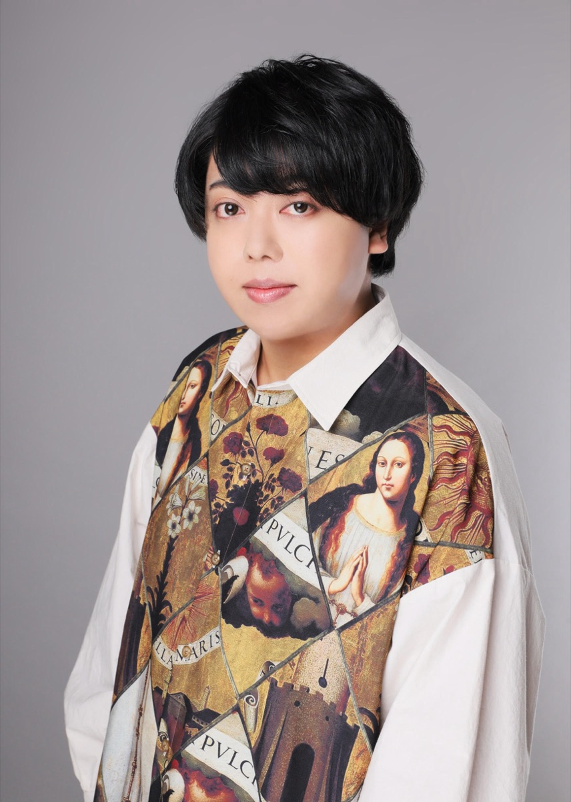

長谷川 貴紀
「占いの帝王」とも呼ばれる
四柱推命を軸に、
複数の占術を組み合わせて鑑定しています。
好きな人の本音が気になる。
既読スルーの理由が知りたい。
片想い、アプリ、復縁――
相手の性格・弱点・心の開き方を分析して、
あなただけの答えを出します。
- 四柱推命
- 紫微斗数
- 易
- 九星気学
- タロット
- オーラ
この六つの占術を組み合わせて鑑定します。
六根清浄の鑑定
1人で戦わせない。
既読スルーされた夜も、
脈なしかもと不安な日も。
「誰にも言えない」悩み、ここで話してください。
決断に迷ったとき、頼れる知恵があります
東洋の占いは哲学や学問と結びつき、
大きな決断を下すための知恵として
使われてきました。
生年月日から導く、的確な答え
生年月日から導き出される答えは
驚くほど的確です。
曖昧な直感ではなく、
根拠のある鑑定をお届け。
当てて終わりにしない。
付き合って終わりでもない。
ずっと続く関係を、一緒に設計します。
実績と経歴
大手占い館での売上
口コミ数
- TV出演多数の著名占い師のもとで修行
- 政財界から頼られる四柱推命師籍に師事
- 芸能・経営者など
表舞台で活躍する方々のご相談実績 - 独立し「占い処 六根清浄」を設立
得意な鑑定内容
相談の多くは「あの人の本音が知りたい」という一言から始まります。
- 恋愛・結婚
- 片想いの相手は私をどう思っている？／アプリで出会った彼は本気か？／既読スルーの理由／復縁の可能性
- 仕事・転職
- 今の会社を辞めるべきか／自分に向いている仕事／複数の転職先どちらを選ぶか
- 人生の選択
- この決断で後悔しないか／引っ越すべきタイミング／親や家族との距離感
- タイミング
- 告白するなら今か待つべきか／入籍日・引っ越し日の吉凶／「今動くべきか」の見極め
占いへの想い
気休めではなく、
本気で使える「道具」として。
あの人は私をどう思ってるのか。
このまま待っていていいのか。
連絡が来ない理由は何なのか。
友達に聞いても「考えすぎだよ」で終わる。
でも気になって夜も眠れない――
そんな悩み、抱えていませんか？
私自身、転職も引っ越しも
人間関係も
四柱推命を使って決めてきました。
自分の人生で
「本当に使えた」からこそ、
お裾分けしたい。
それが原点です。
あなたの話、聞かせてください。
最後まで一緒に考えます。
友達に話しても、
「考えすぎ」「次行きな」で終わる。
でも、あの人の本音が知りたい。
このまま何もしなくていいのか不安。
相手の心の開き方、一緒に考えませんか。
予約は LINE公式アカウント から
「友だち追加」→「鑑定予約」ボタンを押すだけ
※「料金・予約方法」は料金案内へ